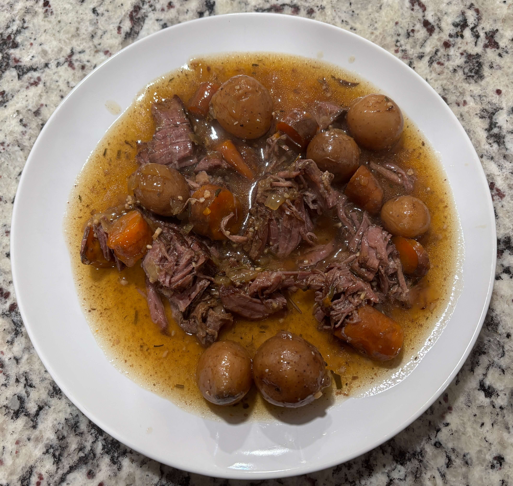

Home
Crockpot Pot Roast

6 servings
Ingredients
- 3 lb boneless beef chunk roast
- 1 lb Yukon gold potatoes (cut into chunks or baby size)
- 1 lb carrots (peeled and cut into 2 inch pieces)
- 1 small chopped yellow onion
- 3 cloves minced garlic
- 1 cup beef broth
- 2 Tbsp worcestershire sauce
- 1 Tbsp soy sauce
- 1 tsp dried thyme
- 1 tsp crushed dried rosemary
- 2 bay leaves
- Salt and pepper
- 2 Tbsp olive oil
- 2 Tbsp cornstarch mixed with 2 Tbsp cold water for a slurry or butter and flour mixture
Steps
- Heat olive oil in a large skillet over medium high heat
- Pat dry the roast and season generously with salt and pepper
- Brown the roast on all sides until a deep crust forms (3-5 minutes per side). Transfer the roast to a 6-quart slow cooker
- Add onions ot the same skillet and saute for 2-3 minutes. Add garlic and cook for 1 more minute. Pour in the beef broth to deglaze the pan scraping up any browned bits
- Pour the broth/onion mixture over the roast in the slow cooker. Add the potatoes, carrots, worcestershire sauce, soy sauce, thyme, rosemary, and bay leaves around the roast
- Cover and cook on low for 8-10 hours or high for 5-6 hours (low is recommended for most tender results). The roast is done hen it is fork tender and pulls apart easily
- Remove the roast and vegetables ot a serving platter. Strain the liquid into a small saucepan. Bring to a simmer with small bubbles and not a rolling boil over medium high heat. Whisk in the cornstarch slurry and cook for about 1 minute until thickened. If you boil the cornstarch too long the starch molecules can actually break down and turn the gravy watery again.
- Shred the beef into large chunks and serve with the vegetables, drizzled with the homemade gravy
Tips
- Always mix your cornstarch with cold water or cold broth in a seperate small bowl first. Stir until it looks like smooth milk. Instead of pouring the cold slurry into the big hot pot, take a ladle of the hot broth from your pan and whisk it into your small bowl of slurry first. This warms up the starch gently so it doesn't "shock" and clump when it hits the main pan. Start whisking the main pan of broth before you start pouring. Pour in a very slow, thin stream while whisking vigorously.
- If cornstarch keeps giving you trouble, try a butter-flour mix instead. Mix equal parts softened butter and flour into a paste (like playdough). Drop small pea-sized balls of this into your simmering broth. The butter melts slowly, releasing the flour gradually so it can't clump. It also makes the gravy much richer.
- Don't skip the sear, browning the mead adds a deep caramelized flavor that cannot be achieved by the slow cooker alone
- Use a chunk roast because it has the necessary fat and connective tissue to stay moist during long cooking times
- Cut your potatoes and carrots into larger chunks so they don't turn into mush during the long cook time